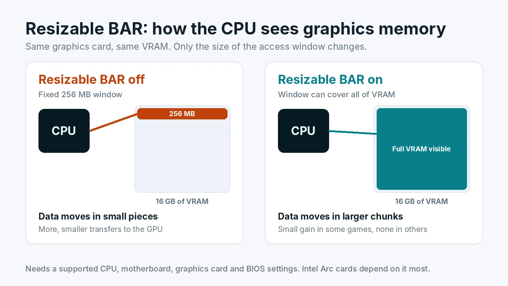

Resizable BAR Explained: Does It Increase FPS and How to Enable It
Resizable BAR is a setting most gaming PCs support but many never turn on. It changes how the processor talks to the graphics card's memory, and in some games it adds a few frames per second for free. In others it does nothing. On Intel Arc graphics cards it matters a lot. This guide explains what it does, when it helps, and how to check and enable it safely.

What Resizable BAR Actually Does
BAR stands for Base Address Register. It defines how much of the graphics card's memory the processor can reach directly at one time. On older setups that window is fixed at 256 MB, even when the card has 8, 12 or 16 GB of VRAM. When the CPU needs to send textures, geometry or other data to the GPU, it has to work through that small window piece by piece.
Resizable BAR lets the window grow to cover the whole of VRAM. Think of it as a delivery truck that used to unload through a small side door and can now use the full loading bay. Same truck, same warehouse, fewer trips.
AMD calls its version Smart Access Memory, or SAM. It is the same underlying PCIe feature with AMD branding.
Does Resizable BAR Increase FPS?
Sometimes, and usually by a small amount.
- NVIDIA cards: the driver turns Resizable BAR on only for games NVIDIA has tested and found to benefit. In those games the gain is typically a few percent. Elsewhere the setting is simply not used, so turning it on rarely hurts.
- AMD cards: Smart Access Memory is applied more broadly. Many games see small gains, some see none, and a few can run slightly worse.
- Intel Arc cards: Intel's own guidance treats Resizable BAR as essential. Without it, Arc cards can lose a large share of their performance and stutter badly. If you own an Arc card, enable it before anything else.
Treat it as a free bonus, not a fix for a real bottleneck. If your graphics card is already at 95 to 100% usage, Resizable BAR will not turn it into a faster card. If your CPU is the limit, see how to lower CPU usage in games instead. Our GPU bottleneck guide covers the settings that make a much bigger difference.
What You Need
All four parts of the chain have to support it:
- Graphics card. Generally NVIDIA RTX 30 series and newer, AMD Radeon RX 6000 series and newer, and all Intel Arc cards. Some early RTX 30 cards needed a graphics card firmware update to enable it.
- Processor. Generally Intel 10th generation Core and newer, and AMD Ryzen 3000 series and newer, with some exceptions among older chips and processors with integrated graphics.
- Motherboard and BIOS. The board needs a BIOS version that exposes the setting. Many older boards gained support through BIOS updates, so check your board's support page.
- Windows in UEFI mode. Resizable BAR needs the system to boot in UEFI mode with CSM (Compatibility Support Module) turned off. That requires the Windows drive to use the GPT partition style rather than the older MBR style.
How to Check If It Is Already On
- NVIDIA: open NVIDIA Control Panel, click System Information at the bottom left, and look for "Resizable BAR". Yes means it is active.
- Any brand: the free tool GPU-Z shows "Resizable BAR: Enabled" or "Disabled" on its main tab, and its advanced tab lists which requirement is missing if it is off.
- AMD: AMD Software shows Smart Access Memory in its performance tuning or system section, depending on the driver version.
How to Enable Resizable BAR
Menu names differ between motherboard brands, so look for the closest match. Update your BIOS first if the options are missing.
- Check your Windows drive is GPT. Press Windows key and R, type
diskmgmt.msc, right-click the Windows disk, choose Properties, then the Volumes tab. If Partition style says MBR, it must be converted before you disable CSM, or Windows will not boot. Microsoft's built-in MBR2GPT tool can convert it without wiping the drive. Back up important files first. - Enter the BIOS. Restart and press Delete or F2 during startup.
- Turn off CSM. Usually under Boot settings. Set CSM to Disabled so the system boots in pure UEFI mode.
- Turn on Above 4G Decoding. Usually under Advanced, PCI Subsystem or PCIe settings.
- Turn on Re-Size BAR Support. It often appears right after Above 4G Decoding is enabled. Set it to Enabled or Auto.
- Save and restart, then confirm with NVIDIA Control Panel or GPU-Z.
If the PC will not boot after disabling CSM, re-enter the BIOS and set CSM back to Enabled. That restores the previous behaviour while you check the partition style.
Should You Turn It On?
For most modern gaming PCs, yes. On NVIDIA and AMD it is low risk, because the gain is small but rarely negative, and NVIDIA only applies it where tested. On Intel Arc it is close to mandatory. The one case to think twice is an older Windows installation on an MBR drive, where the conversion step needs care and a backup.
To see how it affects your own games, test a repeatable scene before and after, and compare average FPS and 1% lows. Our guide to 1% lows and frame pacing explains what to watch.
Resizable BAR and PCIe Version
Resizable BAR is separate from the PCIe generation of your slot. It works on PCIe 3.0 and newer. Whether a PCIe 3.0 slot itself limits your graphics card is a different question, covered in our guide on whether PCIe 3.0, 4.0 or 5.0 bottlenecks your GPU. For other BIOS settings that commonly leave performance on the table, read how to enable XMP or EXPO.
Conclusion
Resizable BAR gives the processor a full view of graphics memory instead of a narrow window. On NVIDIA and AMD it usually adds a little performance in some games and nothing in others. On Intel Arc it is essential. Check whether it is already on, confirm your Windows drive is GPT, then enable CSM off, Above 4G Decoding and Re-Size BAR in the BIOS. For the bigger picture of whether your parts are balanced, try the free PC Bottleneck Calculator.
Frequently Asked Questions
Does Resizable BAR increase FPS?
Sometimes. On NVIDIA and AMD graphics cards the gain is usually a few percent in games that benefit and none in others. On Intel Arc cards it makes a large difference, and Intel treats it as essential.
Is Resizable BAR the same as Smart Access Memory?
Yes. Smart Access Memory is AMD's name for the same PCIe feature. NVIDIA and Intel call it Resizable BAR.
How do I know if Resizable BAR is enabled?
On NVIDIA, open NVIDIA Control Panel, click System Information and look for Resizable BAR. On any brand, the free tool GPU-Z shows whether it is enabled on its main tab.
Can enabling Resizable BAR stop my PC from booting?
Disabling CSM can stop Windows from booting if the system drive uses the older MBR partition style. Check the partition style first and convert it to GPT with a backup in place. If the PC does not boot, turn CSM back on in the BIOS.
Does Resizable BAR work on PCIe 3.0?
Yes. It is supported on PCIe 3.0 and newer, as long as the processor, motherboard BIOS and graphics card also support it.
Sources
Official documentation and tools referenced in this guide: